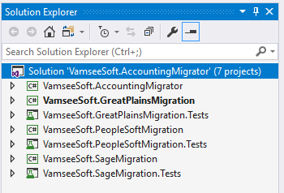
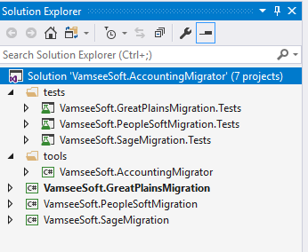
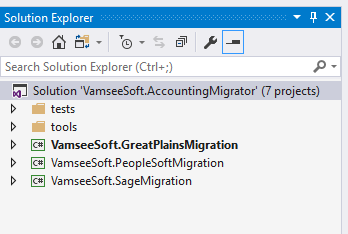
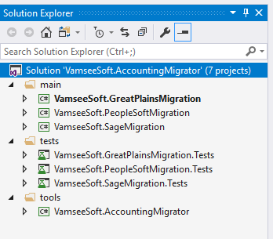
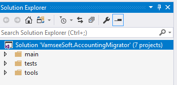
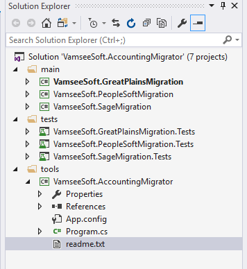

One of the hardest things in doing anything is getting started! It's the same way for writing software. You open up Visual Studio and you are like, where do I begin? Where do I put things? How do I make my life easier?
Hopefully with this post I can make your life easier, not only for you, but for others that might want to work with your code. Most of these ideas came from discussions with my good friend Vamsee Kamabathula he taught me a lot about how to make writing software brain dead easy by following a fairly formulaic approach. This initial project organization is one of those ideas.
To begin let's talk about some stuff to keep in mind:
So in order to show you the way, let's show some wrong ways first.
Imagine if you got a letter in the mail full of glitter. I believe this is called a glitter bomb. You open the thing and glitter goes everywhere. Structuring your project flat like this is really similar.

So if we are looking for an entry point into this project? Where is it? We have somethings called ".Tests" but then we have four things that aren't test? Is one a tool? Obviously the thing has to deal with migrating accounting data. Which one is the tool that actually migrates the data? Chances are that would be a good entry point for us to figure out this code?
So the problem with this is, it's too flat. There isn't really any organization we just have a bunch of projects all inside of one solution file. Up top the collapse all folders button, it will do nothing here. As for first impressions, seven projects isn't bad. Imagine if there were one hundred!
It still is a bad first impression, because I don't know what is what. Where do I go? Keep in mind the 15 minutes rule, most of those 15 minutes is going to be consumed by just finding the entry point, way before they ever look at the code and can understand or evaluate it.

So this is better, but still we have a bunch of classes at the bottom? I can at least see where the tests are. I can see there is a tool, which I think does the migration. Is that the entry point? Does the collapse button help? I want the simplest view so I can explore from there.

Is this the simplest view? We still have stuff at the bottom. It's at the bottom basically because of alphabetical ordering. If I had 100 projects all named different, some starting with A and B, the view of this would be insane. Maybe it makes sense to put all the class libraries into one folder?
Can we do better? Can we make the intial impression not overwhelming?
In cooking there is a term Mise en Place, can we give everything its own place?

Can we collapse it, so we can drill down?

WE CAN!
And finally let's expand the tools project...

...and we see a readme.txt that says:
VamseeSoft.AccountingMigrator
Console Application that migrates from another application to the VamseeSoft Accounting Software
People reading your code, might not have visual studio. It might be github, it might be stash. Remember you have 15 minutes to make an impression.
THIS IS IMPORTANT WHEN YOU CREATE A FOLDER IN VISUAL STUDIO. IT IS LOGICAL, BE SURE TO CREATE A PHYSICAL FOLDER ON THE DRIVE. MAKE SURE THAT STUFF IS ORGANIZED IN THOSE PHYSICAL FOLDERS OR THE GITHUB or STASH REPRESENTATION WON'T MATCH THE LOGICAL REPRESENTATION IN VISUAL STUDIO! This drives a lot of people NUTS! Myself included.
My friends and I have spent a lot of time thinking about how to make this a formulaic repeatable approach. Feel free to do what you want or even improve on this. We know this works. We hope it works for you. It should be a good point to get started. If you find you need to refactor you got that going for you by having the seperation across your project.
If you have any questions or ideas on how to improve this let me know via the comments
The important thing, is to get started. DO SOMETHING! Half of anything is better than all of nothing!